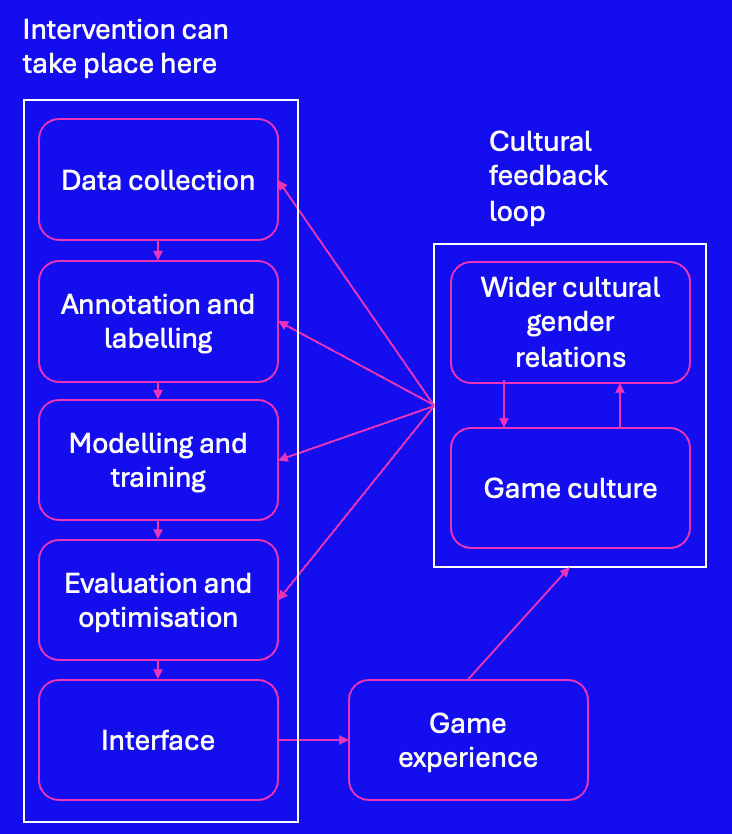
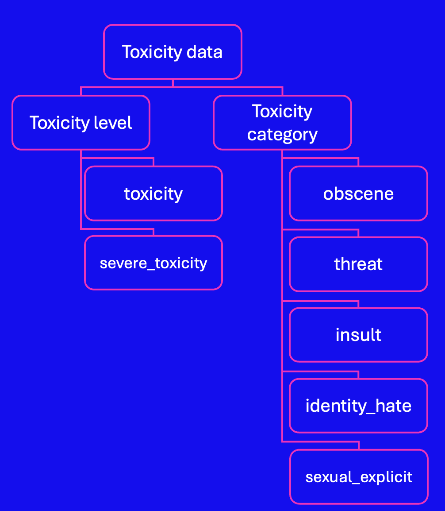
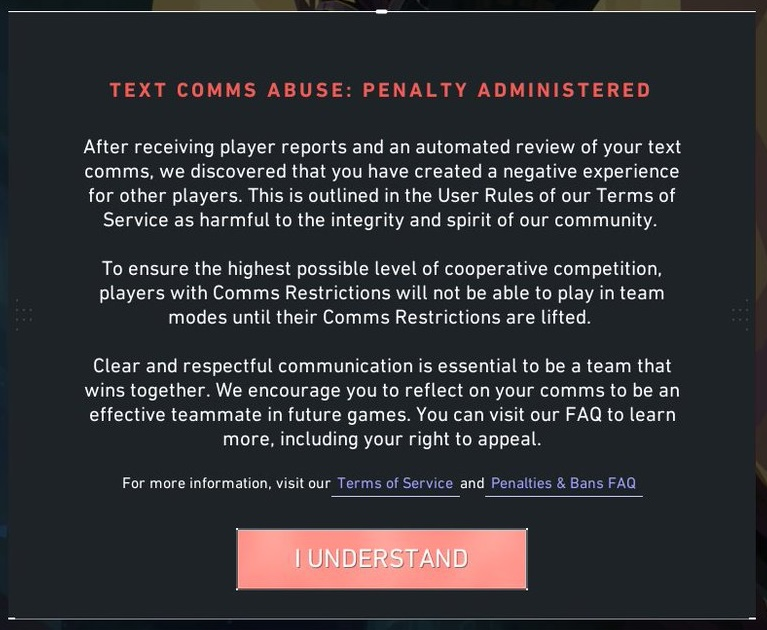

Please be aware that this page contains explicit and potentially harmful language.
Layer 1
As the online gaming space becomes too vast for manual chat moderation, more and more advanced machine learning models are being developed for the purpose of automating the process of identifying and penalising toxic game chat. As such, online gamers rely on AI chat moderation to protect their right to exist and communicate online without being abused or discriminated against. I am investigating what happens when models and their developers fail to protect this right.
This case study will focus on the disproportionate harm done to women by the failure of toxicity detection models to accurately and reliably detect sexually violent and misogynistic rhetoric in game chat.
The modern video gaming space is underpinned by a pervasive culture of misogyny, particularly expressed through sexual harassment, sexually violent language and behaviour. This can be seen in the fact that 56.6% of women report having experienced one or more types of sexual harassment in online games. Due to this, a failure to accurately and reliably identify toxicity in game chat disproportionally harms women; Not only can seeing this content cause distress for the victim, but a lack of penalisation for the perpetrator reinforces the idea that this kind of harassment is acceptable. With over 83% of 12-15 year-olds stating that they play games online involving other people, this facilitates a particularly dangerous situation in which young boys are groomed into this culture of misogyny, creating a feedback loop of toxicity.

This diagram demonstrates the flow of inequality through the machine learning pipeline and beyond, and the feedback loop that this creates.
My aim with this project is to expose the role that cultural bias against women plays in each layer of the pipeline.
Layer 2
Throughout this investigation, I will focus on 2 benchmark datasets used for training and testing.
Created by Alphabet Jigsaw for their Toxic Comment Classification Challenge, this dataset is compiled of Wikipedia editor comments. Human annotators mark each toxicity label with a binary score.
| id | comment_text | toxic | severe_toxic | obscene | threat | insult | identity_hate |
|---|---|---|---|---|---|---|---|
| 0000997932d777bf | Explanation Why the edits made under my username Hardcore Metallica Fan were reverted? They weren't vandalisms, just closure on some GAs after I voted at New York Dolls FAC. And please don't remove the template from the talk page since I'm retired now. | 0 | 0 | 0 | 0 | 0 | 0 |
| 000103f0d9cfb60f | D'aww! He matches this background colour I'm seemingly stuck with. Thanks. | 0 | 0 | 0 | 0 | 0 | 0 |
| 000113f07ec002fd | Hey man, I'm really not trying to edit war. It's just that this guy is constantly removing relevant information and talking to me through edits instead of my talk page. He seems to care more about the formatting than the actual info. | 0 | 0 | 0 | 0 | 0 | 0 |
| 0001b41b1c6bb37e | More I can't make any real suggestions on improvement - I wondered if the section statistics should be later on, or a subsection of ""types of accidents"" -I think the references may need tidying so that they are all in the exact same format ie date format etc. I can do that later on, if no-one else does first - if you have any preferences for formatting style on references or want to do it yourself please let me know. There appears to be a backlog on articles for review so I guess there may be a delay until a reviewer turns up. It's listed in the relevant form eg Wikipedia:Good_article_nominations#Transport | 0 | 0 | 0 | 0 | 0 | 0 |
| 0001d958c54c6e35 | You, sir, are my hero. Any chance you remember what page that's on? | 0 | 0 | 0 | 0 | 0 | 0 |
| 00025465d4725e87 | "Congratulations from me as well, use the tools well." | 0 | 0 | 0 | 0 | 0 | 0 |
| 0002bcb3da6cb337 | COCKSUCKER BEFORE YOU PISS AROUND ON MY WORK | 1 | 1 | 1 | 0 | 1 | 0 |
| 00031b1e95af7921 | Your vandalism to the Matt Shirvington article has been reverted. Please don't do it again, or you will be banned. | 0 | 0 | 0 | 0 | 0 | 0 |
| 00037261f536c51d | Sorry if the word 'nonsense' was offensive to you. Anyway, I'm not intending to write anything in the article(wow they would jump on me for vandalism), I'm merely requesting that it be more encyclopedic so one can use it for school as a reference. I have been to the selective breeding page but it's almost a stub. It points to 'animal breeding' which is a short messy article that gives you no info. There must be someone around with expertise in eugenics? | 0 | 0 | 0 | 0 | 0 | 0 |
| 00040093b2687caa | alignment on this subject and which are contrary to those of DuLithgow | 0 | 0 | 0 | 0 | 0 | 0 |
Sourced from the discontinued Civil Comments plugin, which required comments on news sites, for example, to be manually approved or disapproved by other commenters before posting. The data represents the proportion of approvers who marked each toxicity label as applying to each comment.
| text | toxicity | severe_toxicity | obscene | threat | insult | identity_hate | sexual_explicit |
|---|---|---|---|---|---|---|---|
| This is so cool. It's like, 'would you want your mother to read this??' Really great idea, well done! | 0.0 | 0.0 | 0.0 | 0.0 | 0.0 | 0.0 | 0.0 |
| Thank you!! This would make my life a lot less anxiety-inducing. Keep it up, and don't let anyone get in your way! | 0.0 | 0.0 | 0.0 | 0.0 | 0.0 | 0.0 | 0.0 |
| This is such an urgent design problem; kudos to you for taking it on. Very impressive! | 0.0 | 0.0 | 0.0 | 0.0 | 0.0 | 0.0 | 0.0 |
| Is this something I'll be able to install on my site? When will you be releasing it? | 0.0 | 0.0 | 0.0 | 0.0 | 0.0 | 0.0 | 0.0 |
| haha you guys are a bunch of losers. | 0.893617 | 0.021277 | 0.0 | 0.0 | 0.872340 | 0.021277 | 0.0 |
| ur a sh*tty comment. | 0.666667 | 0.047619 | 0.638095 | 0.0 | 0.333333 | 0.0 | 0.009524 |
| hahahahahahahahhha suck it. | 0.457627 | 0.050847 | 0.305085 | 0.0 | 0.254237 | 0.0 | 0.220339 |
| FFFFUUUUUUUUUUUUUUU | 0.0 | 0.0 | 0.0 | 0.0 | 0.0 | 0.0 | 0.0 |
| The ranchers seem motivated by mostly by greed; no one should have the right to allow their animals destroy public land. | 0.0 | 0.0 | 0.0 | 0.0 | 0.0 | 0.0 | 0.0 |
| It was a great show. Not a combo I'd of expected to be good together but it was. | 0.0 | 0.0 | 0.0 | 0.0 | 0.0 | 0.0 | 0.0 |
Considering the (often harmful) influence of gaming subcultures on the wider internet culture and subsequently on the political and cultural landscape of internet-connected communities in general (Bezio 2018), the fact that there is no widely accessible benchmark dataset comprised of video game chat logs is concerning. Additionally, gaming culture is partially characterised by linguistic deviation and a niche lexicon by which the 'in group' of gamers can identify one another (Susanti 2022). For example, the above paper mentions the word 'noob', an insult stemming from the world 'newbie', referring to a player who performs poorly in a game. A commonly used insult in online video games, the word appeared only 9 times in the Jigsaw dataset and 25 times in the Civil Comments dataset. Particularly considering that 'noob' is arguably an example of 'gamer-speak' that has found its way into the mainstream online lexicon, it could be entirely possible that more obscure, newer gamer-specific language will not be represented in these datasets at all. This only reinforces the necessity for a model trained on linguistic data sourced from online game chat, as a lack of relevant specific training data allows potentially toxic language such as this to slip under the radar.
In addition to the lack of gaming-specific comment data collected, the data lacks the contextual information necessary to accurately capture the impact and lived experience of internet users using and encountering toxic language online, eg.
A lack of context such as this results in an inability to accurately judge nuanced situations, such as the use of misogynistic or generally harmful dogwhistles in game chat. For example, we can compare 2 conversations:
p1 (male): sorry haha my lag is so bad
p1 (male): i moved my laptop from the kitchen to my room and the wifi sucks here
p2 (male): go back to the kitchen lol
p1 (male): are u a girl
p2 (female): yeah why
p1 (male): go back to the kitchen lol
p1 (male): u suck
The same comment 'go back to the kitchen lol', is used in both contexts, however only in the second conversation does it act as a misogynistic dogwhistle, an example of what Emma Alice Jane refers to as 'e-bile' against women online (Jane 2014). Much as dogwhistles such as these are created and used with the intention of creating plausible deniability amongst human readers, without the necessary context online comments such as these could easily be ignored by annotators, leading to the same outcome when processed by a toxicity detection model. While 'u suck' could be flagged as an insult by an annotator, without the two messages together in the relevant context, the misogynistic tone of the conversation is never picked up on.
Below is an example (using synthetic data generated by myself) of the metadata that could be collected to provide further context to a dataset comprised of game chat log information. Giving each message in a game a number corresponding to the order in which they were sent also allows for annotators to view the conversational context of each comment, allowing for more accurate annotation in cases such as the above.
| playerID | date | time | server | matchID | chatID | chat_text |
|---|---|---|---|---|---|---|
| 000001 | 16/03/2026 | 10:30:23 | LON | UR0001 | 0001 | hi everyone :> |
| 000002 | 16/03/2026 | 10:30:45 | LON | UR0001 | 0002 | hey hows it going |
| 000001 | 16/03/2026 | 10:31:04 | LON | UR0001 | 0003 | im good! good luck have fun |
Layer 3
The process of automated toxicity detection hinges massively on the categories used to define toxicity and its different forms - I argue that the taxonomy used for benchmark datasets and models is a significant factor in these models' failure to protect women and other marginalised groups from online toxicity.
Firstly, treating 'identity hate' (including misogyny) as distinct to 'sexual explicit' or 'insult', for example, fails to recognise the role that structural misogyny has played in the development of language, including insulting language. For example, in the Toxic Comment Challenge dataset sample, a comment including the word 'cocksucker' was flagged as obscene and insulting, but not as identity hate. Despite misogynistic and homophobic origins conflating sexual behaviour with weakness of character, many annotators may be desensitised to this kind of structural discrimination. This is the case for a significant proportion of vulgar and insulting language, and as such to treat these categories as unquestionably distinct could result in a failure of the data to accurately represent less obvious identity discrimination such as this.

Taxonomy diagram for the toxicity data top-level category of the Civil Comments dataset.
For the remainder of this section I want to explore the harm that can be caused by collapsing all 'identity hate' into a homogenous category.
| Mentioned Identity |
|---|
| male |
| female |
| homosexual_gay_or_lesbian |
| christian |
| jewish |
| muslim |
| black |
| white |
| psychiatric_or_mental_illness |
If we assume that the makeup of the JTCCC dataset is similar, we can calculate that specific identity hate mentioning women counts for less than 156 of 159,571 comments in the dataset. Collapsing all identity hate into one category like this disguises the lack of equal representation in the dataset, allowing this particular form of bias to go unnoticed at first glance.
While it would be impossible to capture every unique form of identity hate in an individual label, this issue could be reduced by introducing more subcategories within the existing taxonomy, eg. individual labels for misogyny, racism, transphobia, homophobia, etc. By expanding the identity hate label in this way, it becomes easier to analyse and improve trends in the model's performance with respect to different kinds of discrimination.
Layer 4
For this section I investigated Unitary AI's Detoxify model, pretrained on the Jigsaw TCCC dataset.
I evaluated the model's performance on 4 different samples from the test dataset:
The Detoxify original model returns a value between 0 and 1 for each label, representing the model's level of confidence that the category of toxicity is present in the comment. As every member of the sample datasets was annotated as containing toxic content, the average toxicity level prediction also represents average accuracy here.
By evaluating the pretrained model's performance in ambiguous cases brought about by flaws in the structure of the data, I wanted to examine the way that data collection and taxonomy carries through to the model's predictions, proliferating potential bias.
In the test dataset I found a significant number of comments including clear misogynistic, woman-hating rhetoric, yet they were not flagged as cases of identity hate (sample X₂). This seemingly reflected a trend throughout the entire dataset, including the training data, as the above graph shows that these cases were far less likely to be identified as identity hate by the model itself than comments that had been annotated as such. Sample X₂ also recieved the lowest overall toxicity prediction of all samples, suggesting that the type of misogynistic comment being overlooked as an example of identity hate is also treated as less toxic or harmful in general by annotators.
Shown are some examples of the misogynistic content of comments in sample X₂, not flagged by annotators as identity hate, and their predicted levels of toxicity and identity hate.
| comment | toxicity | identity_hate | |
|---|---|---|---|
| 01 | 'she is a huge slut' | 0.99187136 | 0.031920463 |
| 02 | 'she is a slutty whore' | 0.99659306 | 0.26147 |
| 03 | 'all children named Madi will grow up as a whore' | 0.9569943 | 0.054611884 |
| 04 | 'A lucky cunt is a girl who finally finds a true master. Also, the master has to find a girl to become his slave' | 0.7600956 | 0.037185267 |
Each example contains clearly hateful or discriminatory language towards women based on their identity, yet neither human annotators nor the model recognise this. With such a small sample, it would be impossible to identify accurately the patterns in the type of misogynistic rhetoric that seems to be treated as less toxic or hateful. Strathern and Pfeffer (2022) suggest that the more explicit or vulgar the misogynistic hate speech is, the more likely it is to be recognised by toxicity models, while less explicit forms of misogyny, such as the dogwhistles discussed earlier, can be overlooked. This could be reflected in my findings here; Although the example X₂ comments above do contain misogynistic slurs such as 'cunt' and 'whore', the X₁ comments on average contained significantly more varied and emotive expletive language. As shown in the graph, X₁ produced more accurate toxicity and identity hate predictions, which could reinforce their conclusion.
Layer 5
As I touched on previously, the model and the data that defines it do not exist in a vacuum - the structural misogyny that models such as these attempt to combat impacts every stage of the computational pipeline.

Valorant text chat ban alert. Source: X
Firstly, inequalities are introduced at the sensing level, as the data is collected in-game. An example of this can be seen in Riot Games’ first person hero shooter, Valorant, which uses a combination of ‘traditional’ text-based chat and voice communications in-game, allowing two different channels for potentially toxic speech. While text chat logs are automatically collected and stored for up to 3 months, unless a report is filed voice comms logs are automatically deleted after 24 hours, meaning that a significant portion of communication data is removed before it can be used for any kind of training. Additionally, voice comms are filtered through additional layers of synthetic distortion as an Automatic Speech Recognition model must be used in order to create clean text data for analysis and training.
Not only does this introduce an entirely new dimension of inequality and bias to the pipeline (Feng et al. 2021), but this bias results in a higher rate of false negative toxicity reports, essentially allowing toxic players to ‘get away with’ harmful rhetoric in voice comms that would be penalised in text chat. This is reinforced by the fact that Riot did not release the beta for voice chat moderation until June 2022, two years after the release of Valorant itself. Even as voice chat moderation improves, a culture remains in which players feel more comfortable using toxic and harmful language in voice comms than text chat.
The result of this is that if only text chat data is being collected and used for training, it is likely that a large portion of the most harmful communication in-game is being missed entirely, spoken in voice comms instead. This represents a structural flaw with the sensing process in which developers must choose between introducing bias to training data through including data synthetically distorted by ASR, or using an incomplete, skewed dataset.
While independent developers can aim to improve toxicity detection models, online gaming culture is dominated and shaped by a handful of companies. Ranking online multiplayer-focused PC games by monthly active users, at the time of writing six out of the ten highest ranking games were published by Blizzard Entertainment, Valve or Riot Games. Of the seven publishers represented in the list, Chinese conglomerate Tencent owns stakes in five.
As such, it becomes clear that the sensing, distortion, organisation and availability of the majority of online game-related data, and the use of this data to implement in-game solutions, is controlled by a tiny class of developers, publishers and investors. I suggested that inequality could be reduced through using data collected from in-game chat itself, including more in depth user and contextual information. There is a reason that this is not the case already, and it is likely simply due to not being in the best interests of this class. More extensive and longer-term data storage requires time and money spent ensuring compliance with data protection laws and higher storage costs, and the more time dedicated to developing and implementing robust chat moderation tools, the less can be spent on monetisation and player retention-focused features.
Additionally, we cannot overlook the reputation that online games have garnered as an incubator and facilitator of misogynistic, ‘anti-woke’ communities, allowing men to express “hypermasculine aggression” (Mortensen 2016) to an (often harmful) extreme. Looking back on the GamerGate backlash, for example, it becomes easy to see why companies could see increasing restrictions on this behaviour as a potentially very costly risk.
Layer 6
As discussed in the previous section, systemic change to the pipeline of toxicity detection in online games is simply not possible for one person to carry out alone. This is primarily due to the fact that not only does inequality appear at every level of data collection and model creation, but that this inequality is a foundational element of the gender-based society in which we live. My main goal has been to observe this, removing the facade of objectivity that the computational black box lends to the machine learning pipeline and highlighting the points at which wider-scale intervention could be possible.
I believe this to be particularly significant in the case of gender-based oppression, as the cultural dominance of patriarchy heavily relies on the “natural sheen” given by the emphasis on a supposedly ‘inherent’ sexual difference and inequality (Butler 2006). In order to dismantle the societal inequality at hand, this assumption of objectivity must be questioned in all aspects of gender inequality, including computation. I have done this by showing how subjectivity, human choice and societal beliefs affect the machine learning pipeline at every stage, ultimately resulting in an inequality with real detrimental effects for female gamers, and women in general.
Through using these different tools together, I was able to coherently demonstrate how each layer of the system pipeline proliferates bias differently, requiring different intervention.
| tool | critical purpose |
|---|---|
| HTML, JS, CSS | Creates an accessible interface through which users can interact with the usually-inaccessible stages of the machine learning pipeline. |
| Diagram software | Demonstrates the flow of data and inequality through the system, how inequality adds and changes through each step of the data processing pipeline. |
| D3.js | Allows for clear representation of the data with interactive elements that help with user comprehension. For example, bar charts with tooltips displaying figures for each bar allows for users to rapidly switch between a zoomed-out, broad comparative view of the data, to seeing exact figures written clearly. This, alongside tabs allowing for switching between charts, presents an accessible view of the data that shapes the machine learning process. |
| Python notebooks with Pandas | Allow the user to interact directly with the datasets being used for training and testing, demystifying the data collection process. Allowed me to clean and work with the data easily in order to extract the relevant insights that would usually be obscured. |
| Detoxify package | Reveals the direct impact that bias in data collection and classification has on the behaviour of the model, as well as allowing me to examine and demonstrate particular cases in which the model fails. |
The first step in combating patriarchy is to recognise which truths that we recognise as objective are actually influenced by a man-made culture of misogyny. The area of machine learning is no exception to this. By recognising this inequality, particularly in the influential cultural sphere of online gaming, we can begin to create a true theory of change.
Amaechi-Okorie, O. H., Radeljic, B. (2026), ‘Unheard in the Digital Age: Rethinking AI Bias and Speech Diversity’, arXiv:2601.18641. https://doi.org/10.48550/arXiv.2601.18641
Bezio, K (2018). ‘Ctrl-Alt-Del: GamerGate as a precursor to the rise of the alt-right’, Leadership, 14(5) https://doi.org/10.1177/1742715018793744
Butler, J. (2006) Gender Trouble. New York: Routledge
Google, (2019), civil_comments [Data Set]. Available at https://huggingface.co/datasets/google/civil_comments (Accessed: 10th March 2026)
Hanu, L., Unitary Team (2020), Detoxify version 0.5.1. Available at https://github.com/unitaryai/detoxify. (Accessed: 20th March 2026)
Jane, E.A. (2014), ‘‘Back to the kitchen, cunt’: speaking the unspeakable about online misogyny’. Continuum Journal of Media & Cultural Studies, 4, pp558-570 https://doi.org/10.1080/10304312.2014.924479
Jigsaw (2017), Toxic Comment Classification Challenge [Data Set]. Available at https://www.kaggle.com/competitions/jigsaw-toxic-comment-classification-challenge/overview (Accessed: 10th March, 2026)
Jigsaw (2019), Jigsaw Unintended Bias in Toxicity Classification [Data Set]. Available at https://www.kaggle.com/c/jigsaw-unintended-bias-in-toxicity-classification. (Accessed: 12th March 2026)
Mercante, A. (2023), ‘Despite Advancements, Games Still Aren’t Doing Enough to Stop toxic Voice Chat’, Kotaku. Available at https://kotaku.com/toxic-voice-chat-women-overwatch-valorant-xbox-report-1850663717 (Accessed: 20th March 2026)
Messner, S., Wolens, J. (2024), Every game company that Tencent has invested in. Available at https://www.pcgamer.com/every-game-company-that-tencent-has-invested-in/ (Accessed: 20th March 2026)
Mortensen, T. E. (2016) ‘Anger, Fear, and Games: The Long Event of #GamerGate’, Games and Culture 13(8). https://doi.org/10.1177/1555412016640408
Newzoo, Most popular PC games by monthly active users (MAU) - 37 markets. Available at https://newzoo.com/resources/rankings/top-20-pc-games. (Accessed: 20th March 2026)
Oxford University Press. (n.d.). Cocksucker, n. In Oxford English dictionary. https://doi.org/10.1093/OED/2871949544
Riot Games. (2022), Valorant Voice Evaluation Update. Available at https://playvalorant.com/en-gb/news/announcements/valorant-voice-evaluation-update/ (Accessed: 20th March 2026)
Stoll, J. (2025) ‘Video gaming audiences in the United Kingdom (UK) - Statistics & Facts’. Available at https://www.statista.com/topics/8281/video-gamer-demographics-in-the-united-kingdom-uk/#topicOverview (Accessed: 6th March 2026)
Strathern, W., Pfeffer, J. (2022), 'Identifying Different Layers of Online Misogyny'. arXiv:2212.00480.https://doi.org/10.48550/arXiv.2212.00480
Susanti, A. (2022). ‘GG’s and NT’s: Gaming language in the chat feature of FPS game Valorant’. Diski, 30(2), pp109-116 https://doi.org/10.21831/diksi.v30i2.52660
Wittig, M. (1992) The Straight Mind and Other Essays. Massachusetts: Beacon Press
Zhou Y., Peterson ZD. (2025) ‘Women's Experiences of Sexual Harassment in Online Gaming’. Violence Against Women. 31(8) pp2037-2052. doi:10.1177/10778012241252021.